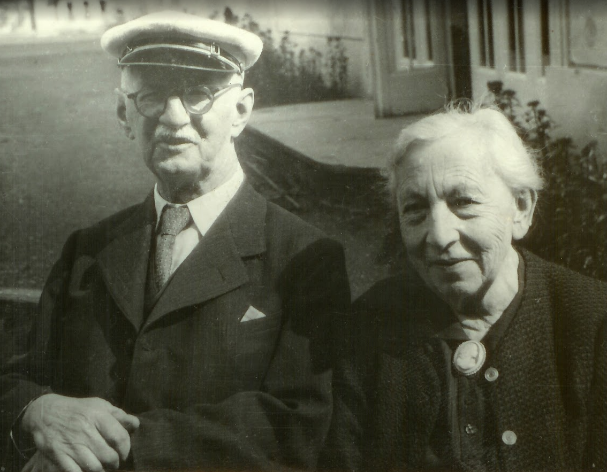

Biographies of Jan Freygang (1835-1912) and Eduard Lusk (1871-1957)
Självbiografier skrivna av Jan Freygang (1835-1912) och Eduard Lusk (1871-1957)

Eduard Lusk och hans fru Anna (född Freygang, dotter till Jan)
"En sjömans memoarer" - "Memories of a sailor" - "Paměti námořníka 1890-1894" written by Eduard Lusk remembering his time in the Austrian-Hungarian navy in Pula.
Skrivet av Eduard Lusk som minnen av hans tid i den Österrikiska-Ungerska marinen i Pula.
This is the first part, more to come... (första delen...)